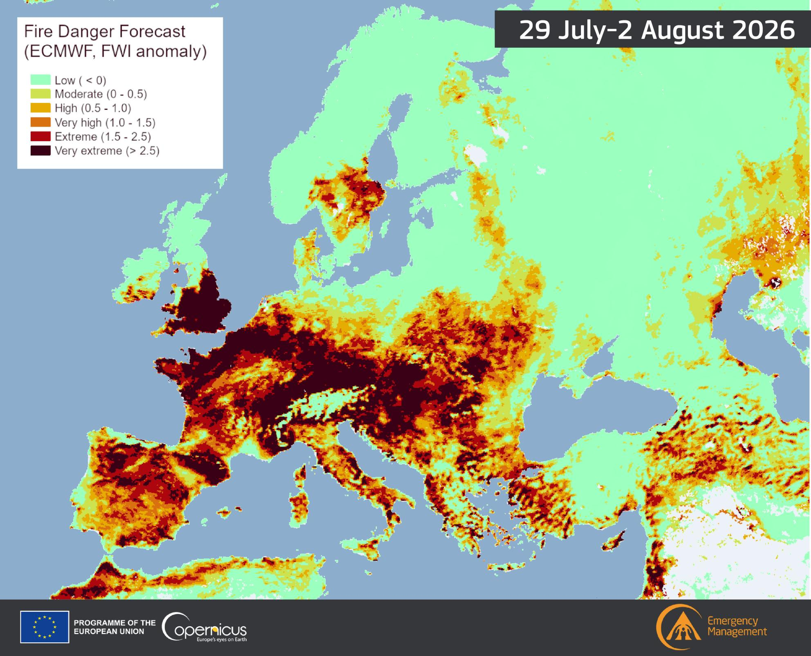
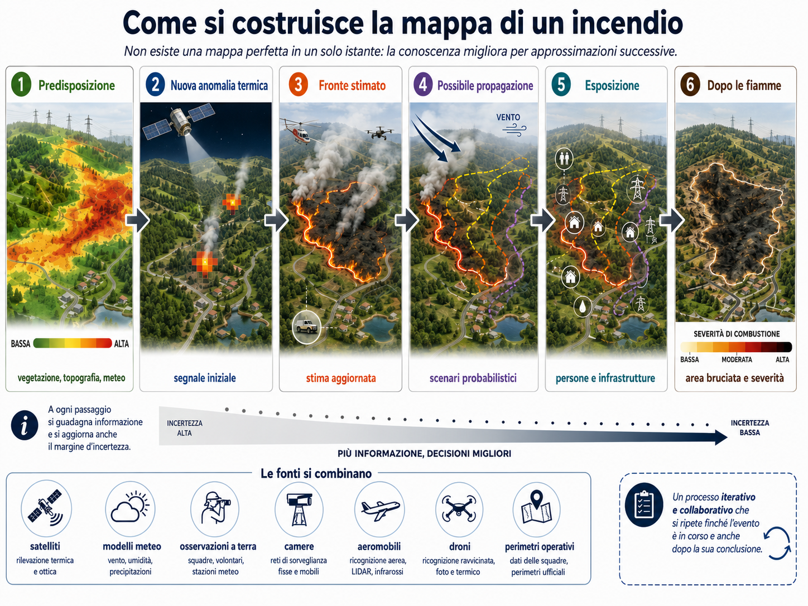
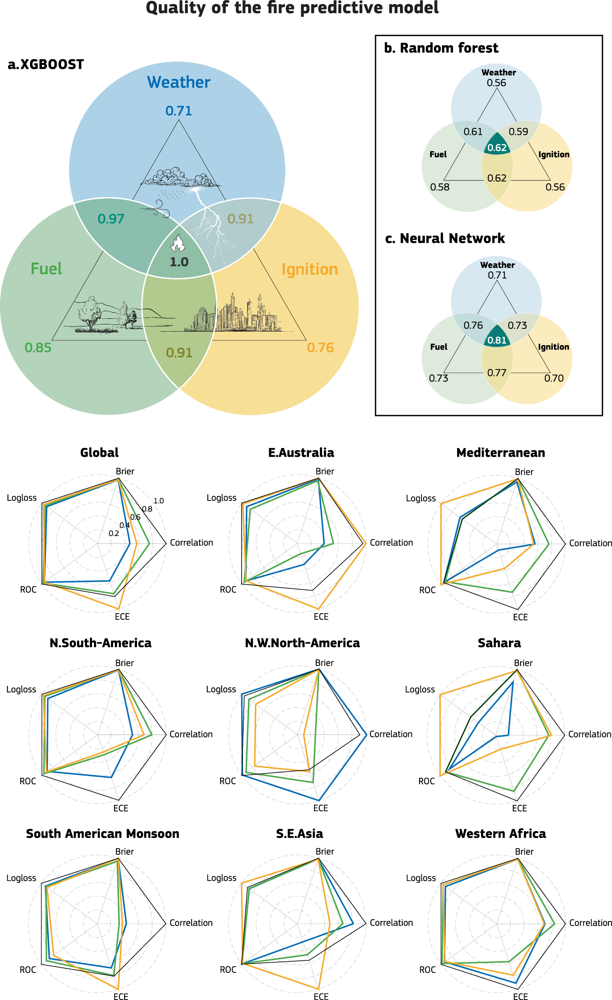
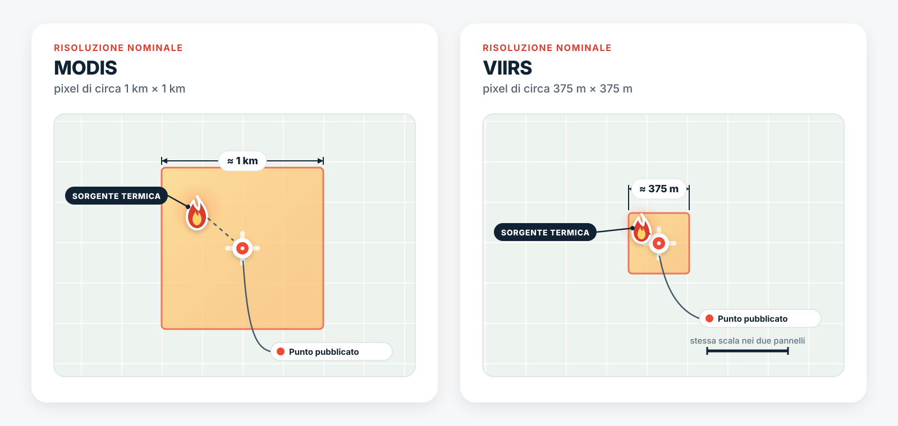
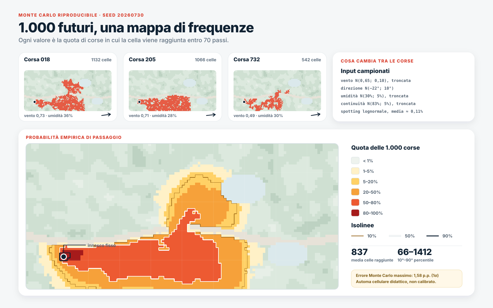
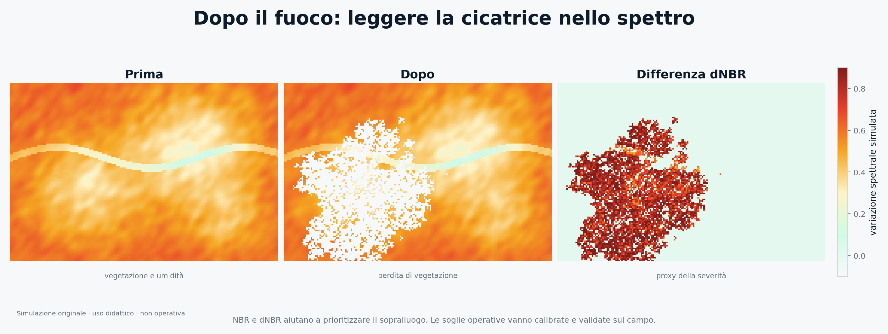

Dove andrà il fuoco?

Sono mesi che non scrivo su questo blog e mi dispiace parecchio 🫣! Però, ho deciso di tornare con una nuova serie di articoli che uscirà una volta al mese (ci proviamo).
Come si gestiscono gli incendi con la GeoAI?
Alle 8:18 del 29 luglio 2026, la pagina del Joint Research Centre dedicata agli incendi europei riportava 434.976 ettari bruciati nell’Unione europea dall’inizio dell’anno, 1.407 incendi rilevati e 17,98 milioni di tonnellate di anidride carbonica emesse. Il confronto con lo stesso periodo del 2025, già indicato dal JRC come l’anno peggiore della serie, rendeva il quadro ancora più severo di quanto già non fosse un anno fa!

Sto scrivendo l’articolo il 30 luglio 2026. La carta rappresenta l’anomalia mediana del Fire Weather Index (FWI), calcolata come deviazione standard rispetto alla media storica degli ultimi trent’anni.Le cifre di EFFIS (European Forest Fires Information System) sono in continuo aggiornamento e le stime vengono corrette quando arrivano immagini, anzi dati in generale migliori.
Il segnale più netto arriva dal Weekly Cumulative Severity Rating di EFFIS. Il Daily Severity Rating (DSR) traduce le condizioni meteo favorevoli al fuoco in una misura della loro severità: più è alto, più un eventuale incendio può diventare intenso e difficile da controllare. Nel 2026 il valore cumulato, cioè la somma giorno per giorno dall'inizio dell'anno, è già oltre l'intervallo osservato nella serie storica finora disponibile. Esplora il grafico per confrontare l'andamento cumulato, quello settimanale e lo scostamento dalla fascia storica.
Facciamo un passo indietro. Ho detto poco fa che le stime vengono aggiornate quando arrivano nuove osservazioni, magari più recenti, più dettagliate o più adatte a quella particolare fase dell’incendio. Ma che cosa significa, in pratica?
Durante un incendio non esiste un’unica mappa, perfettamente aggiornata, capace di restituire nello stesso istante tutto ciò che sta accadendo. Esiste piuttosto un mosaico di informazioni che provengono da satelliti con tempi di acquisizione e risoluzioni diverse, modelli meteorologici, osservazioni sul campo, termocamere, sensori aviotrasportati, droni e perimetri operativi tracciati e poi aggiornati. Ogni nuovo passaggio aggiunge un tassello: riduce una parte dell’incertezza e, spesso, rende visibile quella che prima non riuscivamo nemmeno a misurare.
Ed è qui che entra in gioco la GeoAI, all’interno di un sistema più ampio che comprende GIS, osservazione della Terra, modellistica fisica e dati operativi. Il problema, però, cambia continuamente. Prima si cerca di stimare dove, e in quali condizioni, un incendio possa innescarsi o propagarsi più facilmente. Quando compare un nuovo segnale, occorre rilevare e validare l’anomalia termica, stimare e aggiornare il fronte, simulare possibili scenari di propagazione, individuare persone e infrastrutture esposte e considerarne la vulnerabilità. Dopo il passaggio delle fiamme, lo sguardo cambia ancora: si delimitano l’area bruciata e la severità del danno, per capire che cosa sia stato colpito e con quale intensità.
A prima vista sembra una sola grande applicazione, ma guardando meglio, emergono problemi differenti, collocati su scale temporali che vanno dai mesi ai minuti. Ora entriamo più nel dettaglio per capirci qualcosa di più🧐!

Ogni fase dell'incendio richiede dati, modelli e decisioni diversi: dalla previsione delle condizioni favorevoli fino alla valutazione dei danni e del recupero.
Il fuoco comincia prima delle fiamme
Quando compare il primo punto rosso su una mappa satellitare, una parte della storia, ahimé, è già stata scritta...
Nei giorni precedenti può aver piovuto poco. Il vento può essere aumentato. La vegetazione può aver perso umidità, mentre rami, aghi e arbusti secchi hanno continuato ad accumularsi. Una primavera piovosa può persino aver favorito la crescita di nuova biomassa che, una volta disseccata, diventa combustibile. Poi arriva l’innesco: un fulmine, una scintilla, un’attività agricola, una linea elettrica, un gesto umano deliberato o superficiale.
Per leggere questa fase si usano da tempo gli indici meteorologici di pericolo. In Europa, EFFIS calcola il Fire Weather Index a partire dalle previsioni ECMWF ($\sim 8$ km) e Météo-France ($\sim 10$ km) e lo rappresenta in sei classi armonizzate, da bassa a molto estrema. La documentazione ufficiale di EFFIS descrive previsioni da uno a nove giorni e una classe “Very Extreme” introdotta nel 2021 per distinguere le situazioni mediterranee più gravi.
Il valore indica quanto le condizioni meteo e la vegetazione secca al suolo rendano facile far partire un incendio e quanto rapidamente questo potrebbe propagarsi e diventare difficile da spegnere, se si verifica una scintilla o un’altra fonte di accensione.
Quel qualora conta parecchio.
Un territorio può essere molto secco e ventoso senza che parta alcun incendio. Un’area con condizioni meno estreme può invece bruciare perché l’innesco avviene nel punto sbagliato, vicino a vegetazione continua e a un’interfaccia urbano-rurale.
Qui conviene separare almeno tre concetti.
La pericolosità descrive la possibilità che il fenomeno si presenti con una certa intensità. La probabilità di attività prova a localizzare dove sia plausibile osservare un incendio, aggiungendo informazioni su combustibile e sorgenti d’innesco. Il rischio incorpora ciò che potrebbe essere colpito: persone, abitazioni, strade, ecosistemi, linee elettriche, aziende agricole.
Questi tre concetti possono assomigliarsi. Le decisioni che suggeriscono però cambiano parecchio!
In Italia il Dipartimento della Protezione Civile elabora ogni giorno un bollettino nazionale. Nella valutazione entrano condizioni meteo-climatiche, vegetazione, stato e uso del suolo, morfologia e organizzazione del territorio. Il prodotto esprime, su tre livelli, una stima probabilistica della suscettività all’innesco e alla propagazione nelle ventiquattro ore successive e supporta anche la gestione della flotta aerea statale.
Questa è già una forma di GeoAI, anche quando l’etichetta non compare. C’è una componente geografica, perché ogni variabile cambia nello spazio. C’è una componente modellistica, perché bisogna fondere dati eterogenei. C’è una decisione a valle, perché una zona classificata ad alta suscettività può richiedere un diverso schieramento di uomini e mezzi. Per l’estate 2026, la campagna antincendio boschivo nazionale è stata fissata dal 15 giugno al 15 ottobre.
Negli ultimi anni il machine learning ha provato a spostare un po’ più avanti la messa a fuoco (scusate il gioco di parole infelice in questo articolo). Il modello Probability of Fire sviluppato da ECMWF integra meteo, abbondanza e umidità del combustibile, presenza umana, fulmini e osservazioni dell’attività del fuoco. Secondo la presentazione tecnica di ECMWF, l’impiego congiunto delle diverse sorgenti ha migliorato fino al 30% la capacità predittiva.
Lo studio scientifico da cui nasce il sistema aggiunge un risultato ancora più istruttivo: i dati su combustibile, inneschi e incendi osservati riducono i falsi allarmi dei modelli basati soprattutto sul meteo, mentre la qualità degli input pesa più della complessità dell’architettura. In quel confronto, una soluzione ad alberi come XGBoost ha ottenuto prestazioni paragonabili a una rete neurale più sofisticata.

Prestazioni della previsione data-driven dell’attività di incendio nello studio ECMWF. La figura confronta modelli e insiemi di dati diversi, mostrando il contributo delle osservazioni su combustibile, inneschi e fuochi rilevati. Figura 1 di Di Giuseppe et al. (2025), CC BY 4.0.
Un lavoro condotto nella Spagna orientale aiuta a vedere che cosa significhi aggiungere la componente umana. Gli autori hanno incrociato 849 inneschi con distanza da strade e interfacce urbano-rurali, densità di popolazione, tipi di combustibile e umidità del combustibile mortoCombustibile morto è materiale vegetale privo di tessuti vivi: per esempio foglie, aghi, erba secca, rametti e legno a terra. La sua umidità dipende quasi interamente da umidità relativa e precipitazioni; i materiali fini cambiano umidità molto più rapidamente di quelli grandi. Fonte: NWCG, Glossary of Wildland Fire; guida NWCG su meteo e umidità.: l'algoritmo Random Forest ha raggiunto un’AUC di 0,76 ± 0,01 e ha mostrato come clima e trasformazioni demografiche possano ridisegnare la probabilità d’innesco. Questa è una lezione che torna spesso nella GeoAI: prima di aggiungere strati al modello, conviene chiedersi se stiamo osservando bene il territorio.
ECMWF (Francesca Di Giuseppe, Joe McNorton Christopher Barnard) ha poi pubblicato una Probability of Fire Toolbox, costruita come una sequenza di notebook per preparare dati, addestrare modelli locali e valutarli. La scelta è interessante perché riconosce un limite dei prodotti globali: clima, vegetazione, gestione del suolo e attività umane cambiano da regione a regione. La stessa conclusione emerge da uno studio su oltre 17.000 incendi verificati in diverse aree della Russia centrale: gli F1-score variavano tra 0,70 e 0,87 e gli autori raccomandavano modelli adattati alle caratteristiche di ciascuna regione.
Altri confronti rendono il limite ancora più visibile. A Changsha, in Cina, evapotraspirazione e contenuto d’acqua della chioma sono risultati i fattori più influenti in un modello Random Forest con AUC pari a 0,981; in uno studio tra Okanogan, negli Stati Uniti, e Jamésie, in Canada, le prestazioni sono diminuite quando l’addestramento avveniva in una regione e la validazione nell’altra, pur conservando una capacità predittiva parziale. È il genere di risultato che una media globale tende a nascondere.
Il dominio geografico entra nella logica stessa dell’algoritmo: cambia le relazioni tra le variabili e, con loro, la validità del modello.
Un punto rosso non è il fronte del fuoco
Aprendo NASA FIRMS durante una giornata estiva, si vedono purtroppo costellazioni di punti rossi e arancioni. L’impressione che salta all'occhio è che ogni punto sembra una fiamma e l’insieme dei punti sembra il perimetro dell’incendio.
Ecco non farti ingannare!🥲
Nel prodotto MODIS, un hotspot rappresenta il centro di un pixel di circa un chilometro in cui l’algoritmo ha riconosciuto una o più anomalie termiche. EFFIS ricorda che la risoluzione nominale del pixel MODIS per la rilevazione attiva è di un chilometro. Il punto pubblicato non coincide per forza con la posizione esatta della sorgente e, soprattutto, non è detto che sia l’intera cella non sta bruciando!
Con VIIRS il dettaglio migliora di parecchio! Il prodotto NASA VNP14IMG_NRT rileva attività sub-pixel dentro celle nominali da 375 metri. La natura dell’informazione, però, rimane la stessa. Stiamo osservando un’anomalia termica, non il contorno esatto del rogo.

Il punto viene pubblicato al centro della cella che contiene l’anomalia. La sorgente termica può trovarsi in un’altra porzione del pixel.
Misurare la superficie bruciata richiede un altro procedimento!
Il modulo di Rapid Damage Assessment di EFFIS combina immagini MODIS, VIIRS e Sentinel-2. Le aree ottenute con procedure automatiche vengono controllate e corrette attraverso l’interpretazione visuale; dal 2018 Sentinel-2 consente di affinare i perimetri a venti metri e di includere anche alcuni incendi sotto la soglia dei trenta ettari. EFFIS stima che le aree così mappate rappresentino circa il 95% della superficie totale bruciata nell’Unione europea, pur coprendo soltanto una frazione del numero complessivo di incendi.
Quel controllo evita anche errori meno intuitivi. Impianti industriali, superfici molto calde o attività agricole possono produrre segnali termici sospetti. L’algoritmo richiama l’attenzione. La verifica successiva decide se lì ci sia stato un incendio compatibile con il prodotto.
Hai idea di cosa cambi?
Ho creato un piccolo simulatore che confronta come cambia la dimensione del pixel e come si sposta la sorgente termica all’interno della cella.
La scelta del sensore aggiunge un altro compromesso. I satelliti polari, come quelli che trasportano MODIS e VIIRS, offrono più dettaglio ma osservano lo stesso territorio durante determinati passaggi dei satelliti. I satelliti geostazionari, invece, mantengono lo sguardo sulla stessa porzione del pianeta e aggiornano la scena molto più spesso, accettando pixel più grandi.
Negli Stati Uniti il Next Generation Fire System analizza le immagini dei satelliti GOES. NOAA dichiara che il sistema può generare un avviso anche entro un minuto dal momento in cui l’energia del fuoco raggiunge il satellite; nel 2026 l’agenzia ha inoltre aperto un portale pubblico con rilevazioni e monitoraggio sperimentali quasi continui.
Un altro modo per ridurre la latenza consiste nel portare l’elaborazione direttamente in orbita. L’applicazione PhiFireAI di ESA classifica le immagini di Φsat-2 distinguendo acqua, aree sicure, cicatrici e zone interessate dal fuoco, così da evitare il download di scene prive di informazioni utili. Dopo la fase di commissioning, Φsat-2 ha iniziato a distribuire dati scientifici nel luglio 2025.
Anche l’Europa mediterranea si sta muovendo verso costellazioni dedicate. Nel maggio 2026 la Grecia ha lanciato quattro CubeSat (ora sapete cosa sono 😜) del nuovo Hellenic Fire System, indicato da ESA come la prima capacità satellitare nazionale dedicata al rilevamento e al tracciamento degli incendi. Due mesi dopo, il sistema ha restituito la prima immagine termica sul territorio greco.

Prima immagine termica dell’Hellenic Fire System sul territorio greco. Fonte: ESA.
Il telerilevamento può anche stimare quanto il combustibile sia pronto a bruciare. Un esperimento su scala continentale ha combinato osservazioni a terra, modelli meteorologici e riflettanze VIIRS ed è emerso che rimuovendo i dati satellitari, l’errore nella stima dell’umidità del combustibile mortoCombustibile morto è materiale vegetale privo di tessuti vivi: per esempio foglie, aghi, erba secca, rametti e legno a terra. La sua umidità dipende quasi interamente da umidità relativa e precipitazioni; i materiali fini cambiano umidità molto più rapidamente di quelli grandi. Fonte: NWCG, Glossary of Wildland Fire; guida NWCG su meteo e umidità. peggiorava in modo marcato. A una scala molto più minuta, un lavoro sperimentale ad Harbin ha usato 5.945 immagini multispettrali da drone e 480 campioni. Il risultato? Il modello ConvNeXt ha stimato l’umidità del "combustibile morto"Combustibile morto è materiale vegetale privo di tessuti vivi: per esempio foglie, aghi, erba secca, rametti e legno a terra. La sua umidità dipende quasi interamente da umidità relativa e precipitazioni; i materiali fini cambiano umidità molto più rapidamente di quelli grandi. Fonte: NWCG, Glossary of Wildland Fire; guida NWCG su meteo e umidità. con un MAE dell’1,54% sul test set.
Più satelliti, però, non cancellano il problema. Lo riducono. Un sensore vede il calore, un altro legge la vegetazione, un altro attraversa fumo e nuvole con il radar. La mappa migliore nasce dalla loro combinazione e dalla chiarezza con cui vengono dichiarati tempo, risoluzione e limiti.
Dove andranno le fiamme?
Ok ma torniamo alla domanda dell'articolo, come possiamo capire dove andranno le fiamme? Abbiamo visto che rilevare un incendio significa rispondere alla domanda: dove c’è attività termica?
Prevederne la propagazione significa affrontarne un’altra: come cambierà il perimetro quando vento, pendenza e combustibile interagiranno?
Le fiamme tendono a muoversi più rapidamente in salita perché preriscaldano il combustibile che si trova davanti. Il vento inclina la fiamma, trasporta calore e può sollevare tizzoni capaci di generare focolai oltre il fronte principale. La continuità della vegetazione apre corridoi; strade, rocce e aree già bruciate possono interromperli. L’umidità modifica l’energia necessaria per l’accensione.
I modelli operativi non nascono con il deep learning. Sistemi come FlamMap e FARSITE incorporano decenni di ricerca fisica ed empirica. La documentazione dello US Forest Service elenca otto strati geografici di base, tra cui elevazione, pendenza, esposizione, modelli di combustibile e caratteristiche della chioma. Gli output comprendono velocità di propagazione, lunghezza della fiamma, intensità, crescita del perimetro e probabilità condizionata di bruciatura.
I modelli non sono tutti equivalenti. FlamMap calcola il comportamento potenziale sotto condizioni ambientali costanti, mentre FARSITE permette sequenze meteorologiche variabili nel tempo. Il primo è utile per confrontare paesaggi e trattamenti del combustibile; il secondo segue meglio l’evoluzione temporale.
La GeoAI può entrare nella filiera stimando variabili difficili da osservare, come la distribuzione del combustibile o correggendo gli errori sistematici di un simulatore o costruendo un surrogato più rapido di una simulazione costosa, oppure assimilando nuove osservazioni per aggiornare il perimetro previsto. Sono tutti compiti diversi, e vale la pena dichiarare ogni volta quale di questi si sta affidando al modello!
La piattaforma WIFIRE Firemap offre un esempio di questa integrazione. Il programma di UC San Diego combina meteo quasi in tempo reale, inneschi, topografia e caratteristiche della vegetazione per produrre mappe previsionali in pochi minuti. Durante gli eventi più pericolosi, i perimetri rilevati da aeromobili possono essere assimilati per aggiornare le simulazioni.
Una previsione è un ventaglio
Il fronte non segue una linea già scritta. Piccole differenze nel vento, nell’umidità o nello spotting possono produrre traiettorie divergenti. Per questo una previsione probabilistica è spesso l'output che si ottiene.

La figura nasce da 1.000 corse riproducibili di un automa cellulare semplificato. La frequenza di passaggio è il rapporto tra le corse che raggiungono ogni cella e il totale delle simulazioni. Mostra un principio, non una previsione operativa.
La ricerca sta sperimentando anche modelli generativi. Un lavoro pubblicato nel 2026 su Geoscientific Model Development usa un modello di diffusione per produrre insiemi di futuri plausibili. Il sistema apprende a emulare un automa cellulare probabilistico condizionato da copertura della chioma, densità vegetale, pendenza e vento. Gli ensemble ottenuti rappresentano la quota di simulazioni in cui ogni cella viene raggiunta dal fuoco.
Gli autori lo presentano come una proof of concept addestrata su sequenze sintetiche, sebbene costruite a partire dai contesti geografici degli incendi Chimney e Ferguson. Il lavoro futuro dichiarato comprende proprio la validazione contro progressioni osservate da satellite.
Il motivo per cui non voglio chiamarla “AI che prevede gli incendi” è perché semplificherebbe troppo tutto ciò che c'è dietro. L'AI è utile, ma non è l'unica cosa che permette di prevedere il comportamento dell'incendio.
Muovi il vento, cambia l’esito
Il laboratorio interattivo qui sotto usa la stessa idea generale della figura precedente: una griglia, combustibile sintetico, secchezza, pendenza, vento e spotting. Ogni corsa contiene casualità. Cambiando i controlli si vede quanto rapidamente una traiettoria singola possa diventare fragile.
Esiste una bella API europea?
Ma certo che sì!
Copernicus EMS espone un’API JSON per interrogare le attivazioni pubbliche. La documentazione generale indica un endpoint sintetico per il dettaglio di ogni codice, con titolo, categoria, paesi, centroide, stato e numero di prodotti. Per le attivazioni Rapid Mapping rimane disponibile anche una risposta estesa con aree di interesse, immagini sorgente, statistiche, geometrie, layer e collegamenti ai pacchetti scaricabili. Il nuovo viewer associa inoltre a ogni scheda un collegamento OpenAPI, come quello dell’attivazione EMSR906, che useremo tra poco!
Perché ho scelto proprio quello? Perché è stato un incendio che ho seguito da vicino negli ultimi giorni
Il riquadro seguente prova queste interfacce in sequenza e dichiara quale risposta è riuscito a usare. Mostra soltanto metadati già pubblici, conserva l’ora dell’ultima verifica e, quando disponibile, parte da uno snapshot locale generato durante la pubblicazione. Il JRC cataloga il servizio come pubblico e ne consente il riuso con attribuzione alla Commissione europea, fatte salve eventuali opere di terzi (scheda ufficiale del servizio e condizioni di riuso).
Il modulo va letto come una finestra editoriale sull’evoluzione di un prodotto geospaziale. Per allarmi, evacuazioni e decisioni di sicurezza fanno fede le comunicazioni della Protezione Civile, dei Vigili del Fuoco e delle autorità locali.
Copernicus EMS ha annunciato che i dati vettoriali Rapid Mapping vengono consegnati mediamente due ore prima delle mappe impaginate e che, oltre a shapefile e GeoJSON, è disponibile anche il formato GeoPackage. Per una sala operativa, due ore possono fare la differenza!
Come usa questi dati la Protezione Civile?
Una previsione di propagazione acquista significato quando viene sovrapposta al territorio abitato.
Dove sono le case? Quali strade potrebbero essere tagliate dal fronte? Esiste un’unica via di evacuazione? Dove si trovano ospedali, campeggi, strutture ricettive, linee elettriche e depositi? Quali punti d’acqua sono disponibili per gli aeromobili? Quanto tempo serve alle squadre per raggiungere un versante?
Qui la GeoAI smette di essere soltanto osservazione della Terra e diventa supporto alla decisione.
La campagna antincendio italiana offre un esempio chiaro. Il Centro Operativo Aereo Unificato coordina la flotta statale e lo schieramento viene adattato considerando bollettini, condizioni previste, capacità regionali e richieste che arrivano dal territorio. Il modello non decide quale mezzo far decollare. Restringe il campo, ordina l’attenzione e offre una base comune a persone che devono scegliere in fretta.
Una segmentazione può ottenere un ottimo indice di intersezione sul benchmark e arrivare dopo che il fronte ha oltrepassato una strada. Un modello appena meno accurato può offrire dieci minuti in più e cambiare una decisione. Le metriche informatiche restano necessarie, ma devono incontrare quelle operative: latenza, affidabilità, falsi allarmi, eventi mancati, tempo guadagnato, risorse riallocate.
La domanda decisiva diventa: che cosa è stato possibile fare grazie a questa informazione?
Quando il fuoco non si vede più
Spegnere le fiamme chiude soltanto una parte dell’emergenza.
La perdita di vegetazione e le trasformazioni del suolo possono aumentare erosione, ruscellamento, frane superficiali e colate detritiche. Una pioggia intensa, poche settimane dopo l’incendio, può aprire un secondo capitolo di problemi.
Per ricostruire la severità si confrontano spesso immagini acquisite prima e dopo l’evento. Il Normalized Burn Ratio mette in relazione vicino infrarosso e infrarosso a onde corte, due regioni dello spettro sensibili alla vegetazione e all’umidità. La differenza tra il valore precedente e quello successivo, il dNBR, aiuta a separare aree non bruciate, danni lievi, moderati e severi. Copernicus descrive NBR, area bruciata e Fire Radiative Power come misure complementari dell’impatto.

Anche qui i dati sono simulati. Le soglie di severità non sono universali e vanno calibrate con osservazioni locali.
Negli Stati Uniti, le squadre BAER usano prodotti satellitari preliminari per valutare vegetazione, suolo e bacini idrografici. Il programma fornisce immagini, classificazioni di severità e altri dati entro circa sette giorni dal contenimento, mentre le mappe BARC vengono poi corrette sul campo per produrre la soil burn severity definitiva. La documentazione USGS chiarisce che le classi BARC sono quattro — alta, moderata, bassa e non bruciata — e costituiscono un input per gli interventi di stabilizzazione.
Il confronto spettrale non chiude la faccenda. Dentro lo stesso perimetro possono convivere aree distrutte, porzioni appena intaccate e isole rimaste verdi. Inoltre il radar, l’ottico e i sopralluoghi misurano proprietà differenti. La mappa finale è una sintesi, non una fotografia neutrale.
Nel frattempo il fumo percorre una geografia diversa da quella delle fiamme. Il Copernicus Atmosphere Monitoring Service usa il Global Fire Assimilation System per derivare intensità ed emissioni dalla Fire Radiative Power. GFAS viene aggiornato quasi in tempo reale e alimenta le previsioni sulla composizione e sul trasporto del fumo. CAMS sottolinea anche che la Fire Radiative Power non fornisce la superficie fisica del rogo: misura il segnale energetico usato per stimare intensità ed emissioni.
Il perimetro del danno, a quel punto, non coincide più con il perimetro bruciato. Un pennacchio può attraversare regioni e continenti, degradando l’aria molto lontano dal fronte.
La mappa giusta, al momento giusto
La GeoAI applicata agli incendi somiglia a una staffetta.
Il primo sistema legge la predisposizione del territorio. Il secondo intercetta un’anomalia termica. Il terzo ricostruisce il perimetro. Un simulatore esplora le possibili traiettorie. Un GIS sovrappone abitazioni, infrastrutture e vie di fuga. Dopo lo spegnimento dell'incendio, altri modelli misurano severità, erosione e trasporto del fumo.
Ogni passaggio consegna al successivo una rappresentazione incompleta del mondo.
È facile lasciarsi ipnotizzare dall’ultima rete neurale o dalla nuova costellazione satellitare. Guardando meglio, però, il valore si forma nelle cerniere: nel modo in cui un hotspot viene verificato, una simulazione viene aggiornata, un’incertezza viene comunicata e una previsione entra nella sala operativa.
La domanda “l’intelligenza artificiale può prevedere un incendio?” è troppo larga per essere utile.
Conviene spezzarla.
Quale fase stiamo cercando di anticipare? Con quali osservazioni? A quale risoluzione? Entro quanto tempo deve arrivare la risposta? Chi dovrà decidere sulla base di quella mappa? E che cosa succede quando il modello sbaglia?
Il fuoco corre lungo il territorio. L’informazione deve riuscire a correre un po’ più in fretta!
Fonti e letture per approfondire
Le citazioni principali sono state inserite direttamente nei passaggi che sostengono. Per continuare la lettura:
- JRC — situazione aggiornata degli incendi nell’Unione europea
- EFFIS — Fire Danger Forecast
- EFFIS — Active Fire Detection
- EFFIS — Rapid Damage Assessment
- Protezione Civile — bollettino nazionale incendi boschivi
- ECMWF — Probability of Fire
- Di Giuseppe et al. — Global data-driven prediction of fire activity
- Illarionova et al. — robust wildfire occurrence prediction
- Gelabert et al. — inneschi di origine umana nella Spagna orientale
- Wu et al. — fattori di combustibile e previsione degli incendi a Changsha
- Moghim e Mehrabi — generalizzazione tra regioni fisicamente differenti
- Schreck et al. — VIIRS e machine learning per l’umidità del combustibile
- Xing et al. — stima dell’umidità del combustibile con drone multispettrale
- NASA Earthdata — VIIRS active fire 375 m
- NOAA — Next Generation Fire System
- ESA — PhiFireAI
- ESA — Hellenic Fire System
- US Forest Service — FlamMap
- UC San Diego — WIFIRE Program
- Yu et al. — probabilistic wildfire spread with a diffusion surrogate
- Copernicus EMS — incendi greci del luglio 2023
- Copernicus EMS — EMSN159, valutazione di Rodi
- Copernicus EMS — documentazione API Rapid Mapping
- USGS — Burned Area Emergency Response
- CAMS — monitoraggio globale del fuoco e del fumo